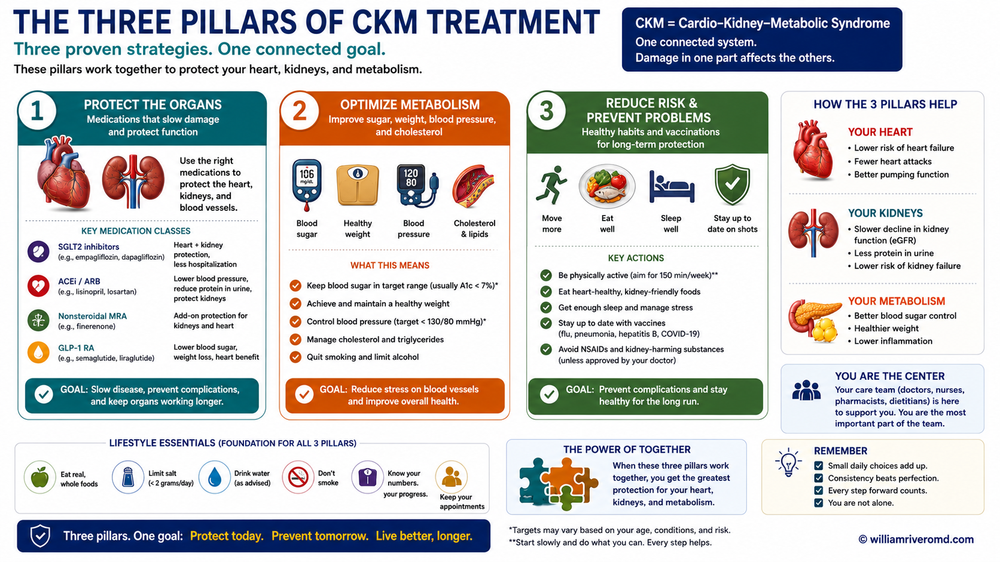
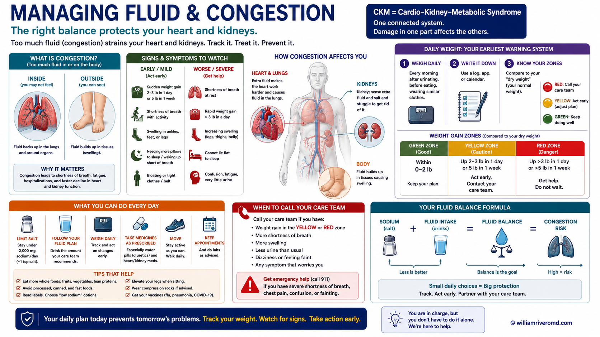
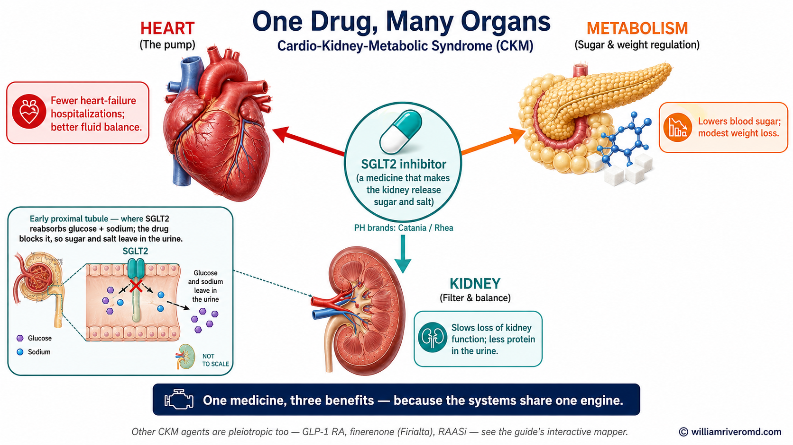
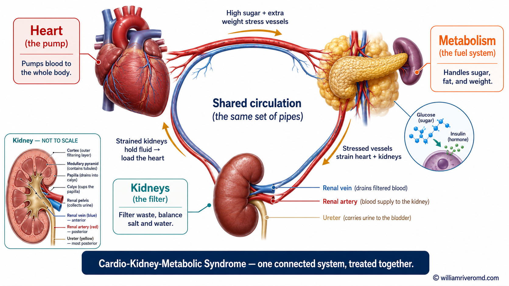
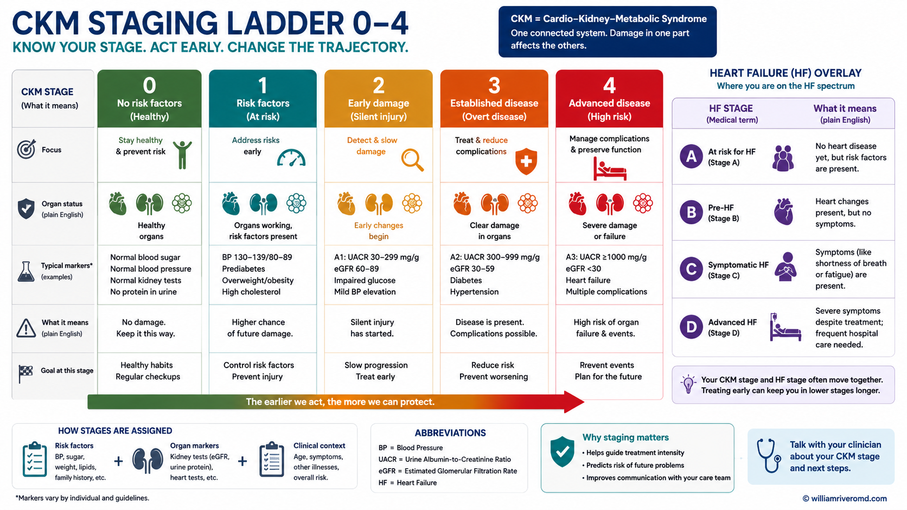
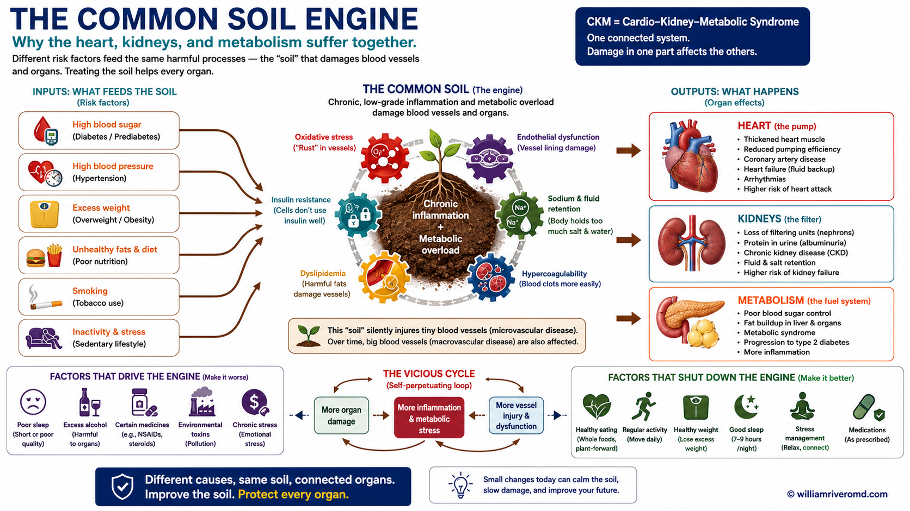
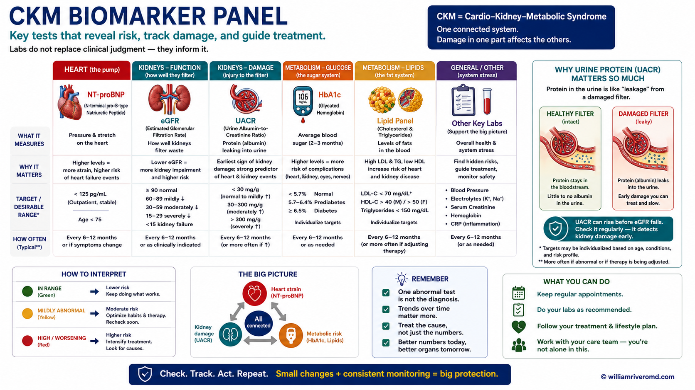
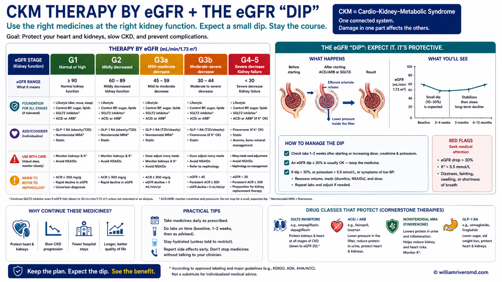

Three parts of your body, working as one
Cardio-Kidney-Metabolic syndrome — CKM for short — describes how three parts of your body are tightly linked: your heart (cardio), your kidneys (renal), and your metabolism (how your body handles sugar, fat, and weight).
When one of these starts to struggle, it puts strain on the others. High blood sugar and extra weight stress the blood vessels; stressed blood vessels make the heart and kidneys work harder; struggling kidneys hold onto fluid, which strains the heart further. It becomes a cycle.
A way to picture it. Think of your heart, kidneys, and metabolism as three pumps connected by the same set of pipes. If pressure builds up in one pump, it travels through the shared pipes and wears down the others. That is why your doctor looks at all three together — fixing only one rarely solves the problem.
The good news: because these systems are connected, the right treatment can protect all three at once. That is the central idea of this guide.
Where am I on the path?
CKM is described in stages, from 0 to 4. The stages are a ladder — they tell you and your doctor how far things have progressed and, just as importantly, what you can do to stay where you are or step back down.
Lower stages are about risk (extra weight, blood pressure, blood sugar). Higher stages mean the heart, kidneys, or blood vessels have started to show changes. The earlier you act, the more you can protect.
Wherever you land, the message is hopeful: at every stage there are concrete steps that protect your heart, kidneys, and metabolism together. The next sections explain them.
Making sense of your tests
A handful of simple tests let your doctor see all three systems at once. Here is what they mean — in everyday terms.
| Test | What it checks | Why it matters |
|---|---|---|
| eGFR | How well your kidneys filter | A lower number means the kidneys are working harder; tracked over time |
| Urine protein (UACR) | Protein leaking into urine | An early warning sign — for both kidney and heart risk, even before you feel anything |
| HbA1c | Average blood sugar over ~3 months | Sugar attaches to your blood cells over their ~90-day life; this shows the long-term picture |
| Blood pressure | Pressure in your vessels | High pressure strains heart and kidneys together |
| Cholesterol / lipids | Fats in the blood | Drives the artery disease behind heart attacks and strokes |
Why we check your urine for protein. Healthy kidneys keep protein in the blood where it belongs. When their filters are stressed, tiny amounts of protein slip into the urine. Catching this early — long before symptoms — is one of the best ways to protect both your kidneys and your heart.
Three pillars that work together
Treatment rests on three pillars. They reinforce each other — medicines work better alongside food and movement, and vice versa.
💊 Targeted medicines
Several modern medicines protect the heart and kidneys at the same time. One important family helps the kidney release extra sugar and salt, easing pressure on the whole system. Your doctor chooses based on your kidney function and your specific situation. Never stop these on your own — even if a lab value wobbles, that is often expected (see below).
🥗 Nutrition
Eating patterns matter more than any single "miracle food." A plate built around vegetables, whole grains, and lean protein — adjusted to your kidney stage — supports all three systems. Salt is worth being mindful of, but the goal is a sustainable, enjoyable pattern, not extreme restriction.
Important for kidney patients: avoid star fruit (balimbing) entirely — it can be dangerous in kidney disease.
🏃 Movement & your body's own healing
Regular activity is genuinely medicine here — it improves blood vessel health, blood sugar, and mood. The aim is steady, achievable movement most days, matched to what your body can do. Even modest activity counts.

Daily weights & fluid — a simple routine
When the heart and kidneys are under strain, the body can hold onto extra fluid. The earliest sign is often weight that creeps up quickly — before you even feel swollen or breathless. Catching it early lets your team adjust treatment before it becomes serious.
⚖️ How to weigh yourself
Weigh every morning, after using the bathroom, before eating, in similar clothing, on the same scale. Write it down. Bring the record to your appointments.
Call your doctor if you notice
- Sudden weight gain — about 2–3 lbs (1–1.5 kg) in a day, or 5 lbs (~2–3 kg) in a few days
- New or worsening swelling in the legs, ankles, or belly
- Shortness of breath — especially lying flat, or waking up breathless at night
- Needing more pillows to sleep comfortably
- A noticeable drop in how much you are urinating
The most important rule. If a lab result or weight changes, do not stop your medicines on your own. Some changes are expected and even a sign the medicine is working. Always talk to your doctor first — stopping suddenly can do more harm than the change itself.

When to seek help
Seek care urgently for
- Chest pain or pressure, especially with sweating, nausea, or pain spreading to the arm or jaw
- Severe or sudden shortness of breath
- Fainting, or a racing/irregular heartbeat that won't settle
- Sudden weakness, drooping face, or trouble speaking (signs of stroke)
📅 Your follow-up rhythm
Keep regular appointments even when you feel well — much of CKM is silent. Bring your home blood-pressure and weight records. Keep an up-to-date medication list. Ask before starting any new over-the-counter medicine or herbal supplement, as some can harm the kidneys.
One engine, one set of healthy choices
The single most encouraging fact about CKM is this: because the three systems share one engine, the right treatment helps all of them at once. Below, see how one important medicine family acts on every corner.

A note from Dr. Rivero. CKM syndrome can sound overwhelming when it is described as heart disease and kidney disease and a metabolic problem all at once. But seeing it as one connected system is actually freeing: every healthy choice and every well-chosen treatment works on all three. You are never working on just one organ — you are caring for the whole, and small consistent steps genuinely add up. Your care team is here to walk it with you.
CKM syndrome as one progressive disorder
CKM syndrome (AHA, 2023) reframes obesity/insulin resistance, chronic kidney disease, and cardiovascular disease as a single, progressive disorder rooted in shared pathophysiology rather than three coincident diagnoses. The 2026 KDIGO Controversies Conference on Kidney Disease and Heart Failure operationalizes the cardiorenal axis of this construct with the "common soil" hypothesis: shared metabolic drivers seed parallel injury in both organs.
The relationship is bidirectional and graded: lower eGFR is a strong predictor of adverse outcomes in both HFrEF and HFpEF, and albuminuria independently predicts incident HFpEF and worse outcomes in prevalent HF. The temporal sequence is often indeterminate — which is precisely why a unified management lens outperforms organ-siloed care.

AHA CKM stages overlaid with HF staging
Use the AHA CKM stages (0–4) for metabolic-risk trajectory, and overlay the universal HF staging (A–D) for cardiac trajectory. The 2026 KDIGO conference proposes that CKD itself (eGFR <60 or UACR >30) qualifies a patient for HF Stage A — a meaningful reclassification that pulls nephrology patients into early HF surveillance.
| AHA CKM Stage | Defining feature | Action emphasis |
|---|---|---|
| 0 | No CKM risk factors | Primordial prevention |
| 1 | Excess / dysfunctional adiposity | Weight, lifestyle, screen for progression |
| 2 | Metabolic risk factors or CKD | SGLT2i / GLP-1 RA / RAASi as indicated |
| 3 | Subclinical CVD or high predicted risk | Intensify; risk-stratify with PREVENT |
| 4 | Clinical CVD with CKM | Full GDMT, secondary prevention |
HF staging overlay (KDIGO-proposed CKD inclusion)
Stage A (At-risk): includes CKD — eGFR <60 mL/min/1.73m² or UACR >30 mg/g — alongside HTN, DM, obesity, cardiotoxin exposure. Stage B (Pre-HF): structural/functional change or elevated NP/troponin, no symptoms. Stage C: symptomatic HF. Stage D: advanced/refractory.
Risk quantification: the AHA PREVENT equations estimate total CVD risk (including HF) and incorporate eGFR in the base model, with UACR and HbA1c as add-on variables — a practical nudge toward routine kidney assessment in cardiometabolic patients.

Four converging pathways of parallel injury
Obesity, diabetes/insulin resistance, and hypertension constitute the shared substrate. They converge on four mechanistic pathways that injure heart and kidney in parallel — several of which terminate in end-organ fibrosis.
Common-Soil Pathophysiology
Hemodynamic
- Salt/water retention
- Venous congestion
- Hypoperfusion
- ↑ Abdominal pressure
Neurohormonal
- SNS activation
- RAAS activation
- ↑ AVP
- ↑ ANP / BNP
Inflammatory
- Oxidative stress
- Immune activation
- Endothelial dysfunction
- Gut dysbiosis · uremic toxins
Fibrotic
- Aldosterone-driven
- Myocardial fibrosis
- Tubulointerstitial fibrosis
- Vascular remodeling
This framing rewards integrative targets: endothelial dysfunction, gut dysbiosis, and uremic toxin handling are legitimate intervention nodes alongside hemodynamic and neurohormonal blockade. Note the obesity association is more pronounced in HFpEF than HFrEF — relevant to phenotype-tailored therapy.

Order eGFR and UACR together
Combined eGFR + UACR remains under-utilized — in a large US analysis, ~80% of at-risk patients did not receive guideline-concordant assessment, and where testing occurred, eGFR was checked in ~90% but UACR in only ~20%. Order both.
| Measure | Note for CKM / cardiorenal context |
|---|---|
| eGFR | CKD-EPI 2021. Use cystatin C–based estimates when GLP-1 RA / significant weight loss confounds creatinine (lean-mass shifts inflate apparent eGFR change) |
| UACR | Independent predictor of incident HFpEF; predictive value for HF hospitalization comparable to BNP. Marker of systemic congestion as well as renal injury |
| Natriuretic peptides | Rise with declining eGFR (reduced clearance) and are lower in obesity. In CKD: high NP rules in HF; normal NP helps exclude it. No validated CKD-specific thresholds — obtain an ambulatory baseline when possible |
| ApoB / Lp(a) | ApoB for discordance (high TG, DM); measure Lp(a) once per 2026 ACC/AHA dyslipidemia guidance |
| TyG · HOMA-IR | Quantify the insulin-resistance substrate driving the common soil |
In advanced CKD (G4–G5/G5D): NP levels are markedly elevated and LVH is near-universal — lean on objective filling-pressure evidence (echo E/e′, IVC, RHC) rather than NP thresholds alone. Image dialysis patients on non-dialysis days.

Phenotype- and eGFR-tailored therapy
Therapy selection in cardiorenal CKM is governed by eGFR, HF phenotype (HFrEF vs HFpEF), and potassium. The matrix below adapts the KDIGO 2026 conceptual framework (their Figure 4 / Table 2).
The eGFR "dip" is expected — don't discontinue reflexively
RAASi, ARNI, MRA, and SGLT2i all produce an acute, hemodynamic decline in eGFR on initiation, driven by reduced intraglomerular pressure. These declines are not associated with adverse outcomes and reverse on cessation. Treating to serum creatinine rather than to symptoms, volume, and hemodynamics is a common, harmful error.
Hyperkalemia mitigation (to preserve GDMT): concomitant SGLT2i, potassium binders, correction of acidosis, dietary potassium moderation, medication review, diuretics.

Nutrition — integrative clinical-nutrition lens
Sodium, reframed: SODIUM-HF and subsequent meta-analyses show strict restriction (<1500–2500 mg/d) does not reliably reduce mortality or HF hospitalization, with signals of possible harm. Individualize for quality of life rather than mandating aggressive restriction.
Protein titrated to CKD stage; potassium contextualized to serum levels and concurrent RAASi; Mediterranean/DASH-pattern adaptation. Star fruit (balimbing): absolute contraindication in CKD ≥ Stage 3.
Physical activity — Class 1, both conditions
Exercise carries a Class 1 recommendation in HF (ACC/AHA/HFSA, ESC) and is recommended in the KDIGO 2024 CKD guideline (moderate-intensity, 1D). Mechanistically it acts on the same engine — endothelial function, insulin sensitivity, autonomic balance. Account for social determinants and environmental barriers (heat, neighborhood safety) when prescribing.
Lipids: apply 2026 ACC/AHA targets — LDL-C <55 (very-high-risk ASCVD) or <70; statin → ezetimibe/bempedoic acid → PCSK9i → inclisiran. Iron: IV (not oral) iron for symptomatic iron-deficient HF; symptom/functional benefit, though hard-outcome RCT data are mixed.
Target symptoms, volume, and hemodynamics — not creatinine
Volume overload drives symptoms and hospitalization. Loop and thiazide diuretics relieve congestion but confer no survival benefit — minimize them while prioritizing disease-modifying therapy (ARNI, SGLT2i) that improves hemodynamics, volume, and kidney health. Low eGFR / high UACR predict diuretic resistance.
| Step | Action |
|---|---|
| Initial dosing | IV loop dose ≥ 2.5× the outpatient oral dose; consider torsemide/bumetanide; early adjunctive diuretics in resistance |
| Response targets | Spot urine Na >50–70 mEq/L at 1–2 h · urine output >100–150 mL/h at 6 h · weight −1–3 kg / 24 h |
| If inadequate | Double loop dose; add sequential nephron blockade (thiazide, K-sparing, or acetazolamide) |
| Refractory | Ultrafiltration or KRT for diuretic-unresponsive overload; PD offers steady volume control, no vascular access, preserved residual function |
| After euvolemia | Once steady-state kidney function + clinical euvolemia achieved, resume/initiate GDMT |
Note: a decline in kidney function in the setting of decongestion is not associated with worse outcomes; worsening renal function alone is not an independent determinant of outcome in acute HF. Standard AKI definitions map poorly onto the dynamic creatinine of GDMT titration — target symptoms, volume, and hemodynamics, not the creatinine value.
Surveillance and escalation triggers
Monitor
eGFR + UACR at baseline and after each therapy change; potassium after RAASi/MRA initiation and titration; recheck eGFR ~1–2 weeks after starting agents with expected dip; NP trajectory against the patient's own baseline rather than population cutoffs.
Refer / escalate
Diuretic resistance, refractory congestion, eGFR decline >30% without hemodynamic explanation, recurrent hyperkalemia limiting GDMT, advanced CKD (G4–G5) needing GDMT optimization, candidacy for UF/PD. Consider a cardiorenal co-management model.
Apply KDIGO 2024 targets across CKD/ESKD per standing protocol (Hgb, ferritin/TSAT, iPTH, Ca/Phos, bicarbonate, K, BP, HbA1c 7–8%). Faster GDMT optimization is better where tolerated; individualize by setting and degree of kidney disease.